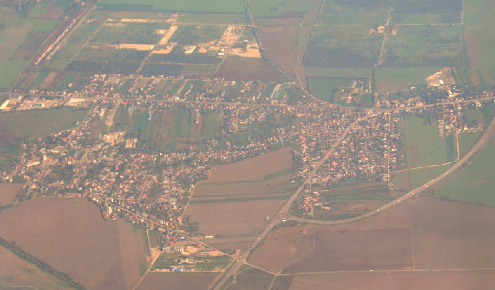

루마니아 프라호바주 8MW 공공 태양광 단지, 11월 말 패널 설치 마무리…병원·학교·가로등 전기와 상계

주 의회가 캄피나시·코마르니크읍과 함께 짓는 I.D.-R.E.S. 3, EU 현대화기금 5,300만 레이 넘게 들여…송전은 2027년 7월 추정, 다음 과제는 저장 배터리
루마니아 프라호바주 의회가 캄피나시·코마르니크읍과 함께 짓고 있는 설치 용량 약 8MW의 공공 태양광 단지가 11월 말까지 패널 설치를 마칠 예정이다. 10월 29일 캄피나의 '게오 보그자' 문화회관에서 열린 사업 설명 회의에서 시공사 엘네트 인스톨(Elnet Install)의 보그단 가네아(Bogdan Ganea)는 공정이 상당히 진척됐다며 이같이 밝혔고, 전력망 송전은 2027년 7월쯤 시작될 것으로 추정됐다. 'I.D.-R.E.S. 3'로 불리는 이 사업은 에너지부가 관리하는 EU 현대화기금에서 5,300만 레이 넘게 지원받아 플로이에슈티 산업단지의 터터라니 지역 땅에 들어서며, 같은 프로그램 세 단계를 '에너지 공동체'라는 이름으로 묶은 전체 사업비는 1억4,072만 레이다. 단지에서 만든 전기는 전력망에 보내고, 그만큼을 캄피나 시립병원과 학교, 문화회관, 청소년회관, 중앙시장, 체육클럽 등 참여 지자체 공공기관의 사용량에서 빼 주는 상계 방식으로 운영된다. 마리오 소아레(Mario Soare) 주 의회 부의장은 전임 집행부가 시작한 사업을 검토해 이어 가기로 했다며 아낀 전기요금을 도로 보수나 병원 장비에 돌릴 수 있다고 했고, 소린 포파(Sorin Popa) 코마르니크 읍장은 지금은 밤에 가로등을 약 4시간밖에 켜지 못하지만 이 전기로 밤새 켤 수 있을 것이라고 말했다. 주 당국은 낮에 남는 전기를 싸게 내보내고 밤에 비싸게 사 오는 문제를 줄이기 위해 저장 배터리를 설치할 재원도 찾고 있다.
시민에너지 관점
밤에 약 4시간밖에 켜지 못하던 가로등을 밤새 켜고 아낀 요금을 병원과 도로로 돌리겠다는 구상은, 공공 땅 위의 태양광이 요금 절감을 넘어 공공서비스를 넓히는 재원이 될 수 있음을 보여 준다. 다만 이 단지는 EU 기금 5,300만 레이로 지자체끼리 짓는 구조여서 주민이 출자하거나 결정에 참여하는 몫은 드러나지 않았고, '에너지 공동체'라는 이름만으로 시민이 주인인 공동체라고 보기는 어렵다. 공공이 부지와 초기 재원을 대고 주민이 일부를 출자해 절감액과 수익의 쓰임을 함께 정할 때, 같은 단지가 행정의 예산 절감 수단을 넘어 주민의 지역 자산이 된다. 국내에서도 산업단지·공공 부지 태양광을 공공기관 요금 상계에 쓸 때 주민 출자 몫과 절감액 사용 결정권을 처음부터 설계에 넣어야 한다.
출처: Oglindadeazi.ro 2026-10-30 기자 미표기 원문 보기
ルーマニア・プラホヴァ県の8MW公共太陽光発電所、11月末にパネル設置完了へ…病院・学校・街灯の電力と相殺
県議会がカンピナ市・コマルニク町と建設するI.D.-R.E.S. 3、EU近代化基金から5,300万レイ超…送電開始は2027年7月の見込み、次の課題は蓄電池
ルーマニアのプラホヴァ県議会がカンピナ市、コマルニク町と共に建設している設備容量約8MWの公共太陽光発電所が、11月末までにパネルの設置を終える予定だ。10月29日にカンピナの「ジェオ・ボグザ」文化会館で開かれた事業説明会議で、施工会社エルネト・インスタル（Elnet Install）のボグダン・ガネア（Bogdan Ganea）氏は工事がかなり進んでいるとしてこう明らかにし、送電網への送電は2027年7月ごろに始まると見込まれている。「I.D.-R.E.S. 3」と呼ばれるこの事業は、エネルギー省が管理するEU近代化基金から5,300万レイ超の支援を受け、プロイェシュティ工業団地のテテラニ地区の土地に建設され、同じプログラムの3段階を「エネルギー共同体」の名でまとめた事業費の総額は1億4,072万レイに上る。発電した電気は送電網に送り、その分をカンピナ市立病院や学校、文化会館、青少年会館、中央市場、スポーツクラブなど参加自治体の公共施設の使用量から差し引く相殺方式で運用される。県議会のマリオ・ソアレ（Mario Soare）副議長は、前執行部が始めた事業を検討して継続を決めたと述べ、節約した電気代を道路の補修や病院の設備に回せると語り、コマルニク町のソリン・ポパ（Sorin Popa）町長は、今は夜に街灯を約4時間しか点けられないが、この電気で一晩中点けられるだろうと話した。県当局は、昼間に余った電気を安く送り出し夜に高く買い入れる問題を減らすため、蓄電池を設置する財源も探している。
市民エネルギーの視点
夜に約4時間しか点けられなかった街灯を一晩中点け、節約した料金を病院や道路に回すという構想は、公共の土地の太陽光が料金の節約を超えて公共サービスを広げる財源になりうることを示している。ただ、この発電所はEU基金5,300万レイで自治体同士が建てる仕組みで、住民が出資したり決定に参加したりする取り分は見えず、「エネルギー共同体」という名前だけで市民が主人の共同体とは言いがたい。公共が土地と初期財源を出し、住民が一部を出資して節約額と収益の使い道を共に決めてこそ、同じ発電所が行政の予算節約の手段を超えて住民の地域資産になる。韓国でも、産業団地や公共用地の太陽光を公共機関の料金相殺に使う際には、住民の出資枠と節約額の使い道を決める権限を最初から設計に組み込むべきだ。
出典: Oglindadeazi.ro 2026-10-30 記者名なし 原文を読む
罗马尼亚普拉霍瓦县8MW公共光伏电站11月底完成组件安装…与医院、学校、路灯用电相抵
县议会与坎皮纳市、科马尔尼克镇共建I.D.-R.E.S. 3，获欧盟现代化基金逾5,300万列伊…预计2027年7月开始送电，下一步课题是储能电池
罗马尼亚普拉霍瓦县议会与坎皮纳市、科马尔尼克镇共同建设的装机容量约8MW的公共光伏电站，预计11月底前完成光伏组件安装。10月29日在坎皮纳"杰奥·博格扎"文化宫举行的项目说明会上，施工企业Elnet Install代表博格丹·加内亚（Bogdan Ganea）表示工程已进展到相当程度，并作出上述说明；据估计，电站将于2027年7月前后开始向电网送电。这一名为"I.D.-R.E.S. 3"的项目获得由能源部管理的欧盟现代化基金逾5,300万列伊支持，建在普洛耶什蒂工业园特特拉尼片区的土地上；以"能源共同体"之名统合的同一计划三个阶段，总投资为1.4072亿列伊。电站所发电力输入电网，再按相应电量从坎皮纳市立医院、学校、文化宫、青少年之家、中央市场、体育俱乐部等参与地方政府所属公共机构的用电量中抵扣。县议会副主席马里奥·索阿雷（Mario Soare）表示，现任领导层对前任启动的项目进行审查后决定继续推进，节省下来的电费可用于修路或添置医院设备；科马尔尼克镇长索林·波帕（Sorin Popa）则说，目前夜间路灯只能开约4个小时，有了这些电就能整夜照明。县政府还在为安装储能电池寻找资金，以减少白天低价外送、夜间高价购入电力的问题。
市民能源视角
让过去夜里只能亮约4个小时的路灯整夜通明，并把省下的电费用于医院和道路，这一构想说明，建在公共土地上的光伏不只能节省电费，还能成为扩大公共服务的财源。不过，这座电站是地方政府之间用5,300万列伊欧盟基金建设的，看不到居民出资或参与决策的份额，仅凭"能源共同体"这个名称，很难说是由市民当家作主的共同体。只有由公共部门提供土地和初期资金、居民出资一部分并共同决定节省额和收益的用途，同一座电站才能超越行政部门节省预算的工具，成为居民的地方资产。韩国在把工业园区和公共用地光伏用于公共机构电费抵扣时，也应从一开始就把居民出资份额和节省额用途的决定权纳入设计。
来源: Oglindadeazi.ro 2026-10-30 未署名 查看原文
Romania's Prahova County to finish panels on 8MW public solar park by end of November…output to offset hospital, school and street-lighting power
County council builds I.D.-R.E.S. 3 with the municipality of Câmpina and the town of Comarnic on more than 53 million lei from the EU Modernisation Fund; grid injection expected from July 2027, storage batteries next
A public solar park with an installed capacity of almost 8MW that Romania's Prahova County Council is building with the municipality of Câmpina and the town of Comarnic is due to have all its panels installed by the end of November. Bogdan Ganea of the contractor Elnet Install gave that timetable at a project meeting on October 29 at the Geo Bogza House of Culture in Câmpina, saying the works were well advanced, and grid injection is estimated to begin around July 2027. The project, known as I.D.-R.E.S. 3, is backed by more than 53 million lei from the EU Modernisation Fund managed by the Ministry of Energy and is being built on land of the Ploiești Industrial Park in the Tătărani area, while the programme's three stages, grouped under the name of an "energy community", total 140.72 million lei. The electricity will be fed into the grid and offset against the consumption of public institutions in the partner localities, including Câmpina's municipal hospital, schools, the House of Culture, the youth centre, the central market and the sports club. County council vice-president Mario Soare said the current leadership had reviewed the project begun under the previous administration and decided to continue it, adding that the savings on power bills could go to repairing a road or equipping a hospital, while Comarnic mayor Sorin Popa said the town can now keep its street lights on for only about four hours a night but should be able to light them all night with this power. County authorities are also looking for funding to install storage batteries so as to reduce the problem of exporting daytime power cheaply and importing it at higher prices at night.
Citizen Energy View
Keeping street lights on all night where they now shine for only about four hours, and steering the savings to hospitals and roads, shows that solar on public land can do more than cut bills: it can become a source of funding to expand public services. But this park is being built between local governments with 53 million lei of EU money, no share for residents to invest or take part in decisions has come to light, and the label "energy community" alone does not make it a community owned by its citizens. When the public sector provides the land and seed funding and residents invest a part and jointly decide how the savings and income are used, the same park becomes a local asset of its residents rather than just a budget-saving tool for the administration. When Korea uses solar on industrial parks and public land to offset public institutions' power bills, it too should build residents' investment shares and their say over how the savings are spent into the design from the start.
Source: Oglindadeazi.ro 2026-10-30 No byline Read the original